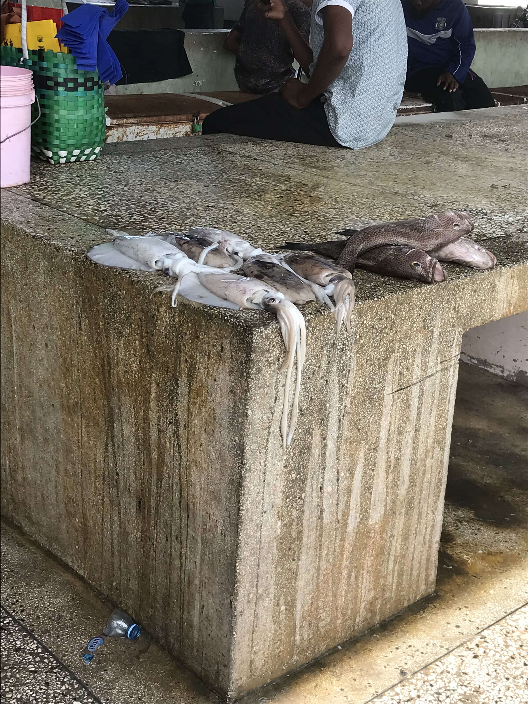
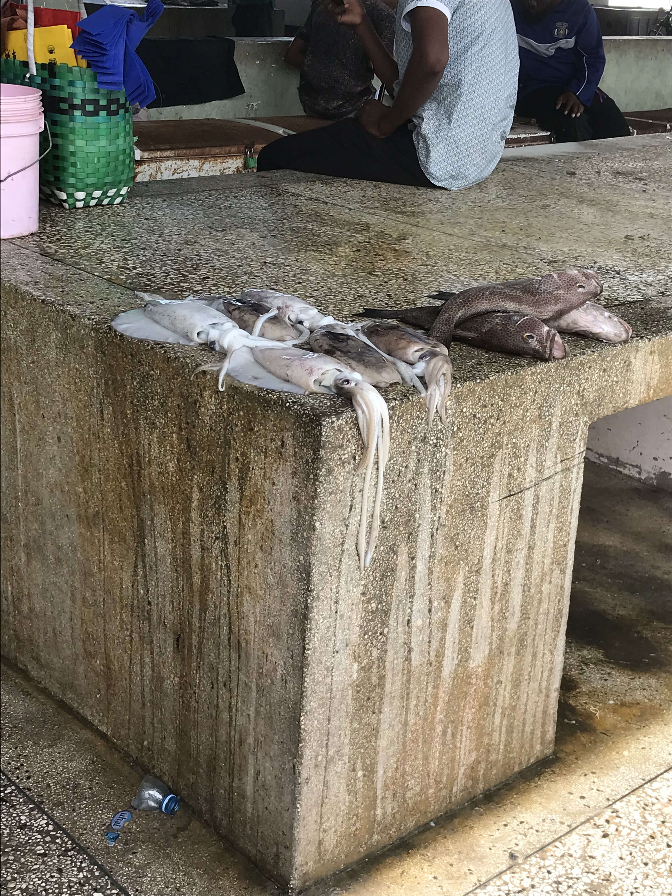

Blogu ya usafiri

Utangulizi
Sikufikiria mara mbili kuhusu kwenda Afrika.
Ninatoka katika hali ya hewa ambayo ni kinyume kabisa na hali ya hewa ya kawaida ya Afrika.
Sio unyevunyevu, wala joto, bali baridi na kavu.
Ninatoka kaskazini baridi; nilikulia Sweden.
Kukutana na mpenzi wangu
Hivi karibuni nilihamia Austria kwenye mlima wa kusini wa Salzburg, ambapo mama yangu anaishi. Anaishi katika kijiji kidogo chenye utalii mwingi mwaka mzima. Haraka sana nilipata kazi katika mgahawa mpya uliofunguliwa ukitafuta wafanyakazi wa huduma.

Kwa kijiji kilichoko karibu na 1 km juu ya usawa wa bahari, joto halikuwa tofauti sana na Sweden. Kwa hivyo, nilikuwa nimezoea sana, tofauti na mpenzi wangu: mwanamke kutoka Tanzania ambaye nilikutana naye kwenye kikundi cha kujitolea cha michezo ya kuigiza huko Salzburg. Alisafiri kwenda Austria kufanya Shahada ya Uzamili katika Michezo ya Kuigiza, na ndivyo tulivyokutana; hatima imetuleta pamoja. Baada ya karibu nusu mwaka, mwezi wa Aprili 2024, alinipeleka Afrika.
Kufika Tanzania
Mpenzi wangu na mimi tulikuwa tumesafiri kukutana na jamaa zangu huko Ujerumani kabla ya safari hii. Tulikuwa tumehisi msisimko na uchovu wa kusafiri pamoja hapo awali, lakini safari hii ilikuwa tofauti sana. Ilikuwa ya kuchosha zaidi lakini pia ya kutia nguvu, ikitupa nguvu nyingi za kuvumilia uchovu. Tulihisi kuwa na nguvu zaidi bila masharti, kusema kidogo ni hisia ya kushangaza.

Kupanda ndege kutoka Istanbul kwenda Tanzania kulikuwa maalum. Sikutarajia aina nyingi sana za watu kuingia kwenye ndege hiyo kwenda Afrika. Niliona Wamarekani wakishirikiana na kuzungumza na wageni kwa namna ya fadhili, ikinipa hisia ya umuhimu wa kimataifa. Kama mtu ambaye amekuwa Marekani kabla, ilikuwa nzuri kuona. Wana hamu ya safari, kama mimi.
Kabla ya safari hii, sikuwahi kufika Afrika kabla. Jambo la kuchekesha ni kwamba, sikuwa hata nimeomba visa kabla ya kusafiri kwenda Tanzania. Kwa nini? Kwa sababu nilikuwa nimeambiwa mapema na jamaa wa mpenzi wangu kwamba kuna "visa ya kuwasili," ambayo inagharimu dola 50 za Marekani na inapatikana kwa urahisi. Kwa hivyo kufika, huu ulikuwa mtihani halisi, ningekwama kwa masaa mengi, au ningepita bila shida yoyote? Nilifika forodhani katika mstari mkubwa wa watu; mpenzi wangu, Mtanzania, alichukua njia ya mkato. Niliwasalimu walinzi wa mpaka kwa "Shikamoo," njia ya heshima ya kusalimia mtu mzima, ikimaanisha "Nakugusa miguu yako." Walijibu kwa "Marahaba," nami nikajibu "Nzuri," ikimaanisha "Niko vizuri." Aliniuliza swali moja tu zaidi, "Kwa nini uko hapa?" Jibu langu fupi, kwamba nilikuwa ninasafiri na mpenzi wangu, lilitosha. Nililipa, na nilikuwa nimepita. Hii ilikuwa ni uzoefu mzuri sana, ambao uliniinua roho. Nilikuwa na hofu kwamba ningeweza kukwama, lakini hapana, Tanzania ilinipokea kwa mikono miwili.
Tofauti na Ufanano wa Kitamaduni
Ninaamini kuwa, kwa ujumla, kuna ubaguzi wa rangi mdogo zaidi Tanzania ikilinganishwa na Ulaya, ingawa maoni yanaweza kutofautiana. Wakati wa ziara yangu Tanzania (nikiwa katika miaka yangu ya ishirini), nilitendewa kwa heshima ya kushangaza licha ya kutokuwa na mafanikio yoyote makubwa ambayo yangenifanya nistahili heshima hiyo. Mwenendo huu wa heshima ulionekana kuwa unatokana tu na muonekano wangu kama mgeni kijana kutoka nchi za Magharibi, nikiwa na mpenzi wangu. Ni muhimu kutambua kwamba hii ni tu maoni yangu binafsi na inaweza isijumuishe uzoefu wa kila mtu.
Sikuwa mgeni wa kawaida tu; nilikaribishwa kwa ukarimu mkubwa katika familia kwa sherehe maalum ya kutambulishwa na kusalimiana. Nilikutana na wazazi wa mpenzi wangu, bibi yake mzee, kaka na dada zake wadogo, wajomba na shangazi wengi, pamoja na marafiki wa karibu wa familia. Kwa mshangao wangu mkubwa, sikuwa mtu pekee aliyekuwa akizungumza Kijerumani katika mkusanyiko huo wa kipekee.
Nchini Tanzania, hisia ya umoja wa jamii ni imara sana, na wenyeji wanawakaribisha wageni kwa moyo mkunjufu. Ingawa kuna tofauti za kitamaduni, upendo wa dhati kwa familia, utamu wa vyakula vya asili, na maadhimisho ya mila na desturi ni mambo ambayo tamaduni zote - ya Tanzania na ya wageni - zinashirikiana kwa undani. Huu mshikamano wa kibinadamu unadhihirisha kwamba licha ya tofauti zetu za kijiografia na kihistoria, bado tunashiriki maadili mengi yanayotuunganisha kwa namna ya kipekee, hata zaidi ya tunavyoweza kufikiria mwanzoni.

Mji wenye historia ya huzuni.
Bagamoyo ndipo nilipotumia muda mwingi Tanzania na ambapo niliipitia Afrika kwa kweli. Licha ya umaskini wa mji huo, watu ni wa kirafiki sana kwa wageni.
"Bwaga," lenye maana ya 'kutupa' au 'kuweka chini,' na "moyo," lenye maana ya 'moyo,' viliunda jina la mahali muhimu katika historia ya utumwa. Bagamoyo ilikuwa kituo cha mwisho cha mapumziko kwa watumwa waliokuwa wamechoka baada ya miezi mingi ya kutembea kutoka bara la ndani. Kwa hivyo, jina Bagamoyo linaweza kutafsiriwa kama 'Weka chini moyo wako' au 'Pumzisha moyo wako,' ikiashiria mahali pa kupumzika na kujiandaa kwa safari ya baharini iliyofuata.
Nilikuwa kweli nimevutiwa sana na mji huu na nikashukuru na kushangazwa kwamba mimi, kwa bahati au niite kama unavyotaka, nililiona mji huu ambao sikujua kuwepo kwake. Katika blogi hii, unaweza kuona picha kadhaa nilizopiga: Picha iliyochaguliwa katika utangulizi wa blogi hii ni jengo la zamani la chai la Kiarabu lililojengwa wakati wa karne ya 18 Bagamoyo. Wakati wa karne ya 18, Waarabu walikuwa wakifanya maisha yao hapa. Kuanzia miaka ya 1880 hadi mwisho wa Vita Kuu ya Kwanza ya Dunia, Tanzania Bara ilikuwa koloni la Kijerumani, na Bagamoyo ilihudumu kama mji mkuu wa kwanza wa Afrika ya Mashariki ya Kijerumani mpaka mwaka 1891, ambapo Dar es Salaam ilipokuwa mji mkuu mpya.
Picha iliyochaguliwa kwa sura hii ni Boma la Kijerumani la zamani lililoungwa mkono na nguzo za chuma ili kuzuia kuanguka.
Safari kwa Kupitia Mtaa kwa Boda Boda
Niliweza kujifunza Bagamoyo ya ndani wakati wa kuishi kwangu. Tanzania, "boda boda" ni njia ya kawaida ya usafiri, unaweza kumwita dereva akupeleke popote kwa bei nafuu. Rafiki wa familia, ambaye nilielewa kuwa dereva wa "boda boda" taxi, alituchukua mahali mbalimbali, na ilikuwa ni furaha sana.
Niliiona mnara wa maji karibu na mwisho wa video?
Mawazo Yangu Kuhusu Soko la Samaki la Tanzania
Soko la samaki ni mahali muhimu sana katika maisha ya wenyeji. Aina za samaki zilikuwa nyingi na tofauti, na ubora wao ulikuwa wa hali ya juu. Nilikwenda huko na mpenzi wangu pamoja na mama yake kununua samaki. Wakati wa kununua, tuligundua kuwa bei ya samaki inaweza kujadiliwa na kukubaliana nayo. Mama yake mpenzi wangu, kwa utani lakini kwa sauti ya dhati, alitueleza baadaye kwamba wauza samaki walikuwa wameongeza bei kidogo zaidi ya kawaida. Alisema hii ilikuwa kwa sababu tulikuwa tunamfuata kama vifaranga nyuma ya kuku, na pia kwa kuwa mimi ni mgeni mweupe, walidhani labda tuna uwezo wa kifedha zaidi.
Samaki Bora kutoka Bagamoyo
 



Maoni Yangu Kuhusu Jiji
Dar Es Salaam, takribani saa moja kusini mwa Bagamoyo, ni tofauti kubwa na mji tulivu wa Bagamoyo. Kama mji mkuu wa kiuchumi wa Tanzania, ni kitovu cha shughuli, na masoko, biashara, na majengo mengi marefu, hivyo ni vigumu kupata nyumba miongoni mwa "msitu wa majengo."
Tulipozuru Dar es Salaam na mpenzi wangu, tulisafiri kote jijini kwa gari na dereva. Wakati wa safari yetu, mara nyingi tulijikuta tumekwama katika msongamano wa magari, jambo ambalo ni la kawaida katika miji mikubwa. Ilinifurahisha na kunishangaza kuona wachuuzi wengi wakija kwenye gari letu (madirisha yalikuwa wazi kwa sababu ya joto na unyevunyevu, na AC yetu haikufanya kazi, kama ilivyotarajiwa) wakijaribu kutuuzia bidhaa mbalimbali. Walikuwa wakiuza mifuko ya korosho na aina nyingine za karanga, mikanda na vikuku vilivyotengenezwa kwa mikono, pamoja na bidhaa nyingine za kuvutia. Bei zilikuwa nafuu sana, na bidhaa nyingi zilikuwa zinauzwa kati ya Shilingi za Kitanzania 1,000 hadi 10,000 kwa kipengee.
Uchumi wa Tanzania
Hebu tuzungumzie fedha! Je, thamani ya shilingi 10,000 za Kitanzania (TZS) ni kiasi gani katika sarafu ya nchi za magharibi kama dola za Marekani (USD) au euro (EUR)?
| Sarafu | Sawa na 10,000 TZS |
|---|---|
| USD | $3.74 |
| EUR | 3.43€ |
| GBP | £2.88 |
Katika duka la nyama la ndani huko Bagamoyo, tuliweza kununua kilo 1 ya nyama kwa TZS 8,000. Nilipokuwa Tanzania, nilihisi kama milionea!

Kwa Nini Utembelee Tanzania?
Kutokana na uzoefu wangu, watu wa Tanzania wanaonekana kuwa na shauku ya kukaribisha wageni. Mtazamo wao kwa watalii unaweza kuwa tofauti na ule unaoonekana katika baadhi ya nchi za magharibi. Ni muhimu kutambua kuwa wakati mwingine Waafrika wanaposafiri Ulaya, wanaweza kukumbana na changamoto za kiutamaduni. Hata hivyo, uzoefu wangu Tanzania ulikuwa wa kupendeza na tofauti kabisa.
Wenyeji wa Tanzania wanaonekana kuwa tayari kusaidia wageni kwa ukarimu, wakati mwingine wakidhani kuwa wageni wana uwezo mkubwa wa kifedha. Hii si kwa nia mbaya, bali ni kutokana na dhana zilizopo. Tanzania ni nchi nzuri yenye utajiri wa utamaduni na maliasili, na ni matumaini yangu kuwa mtazamo huu wa ukarimu utaendelea.
Ni kweli kuwa umaskini bado ni changamoto kubwa nchini Tanzania, kama inavyoonyeshwa na takwimu mbalimbali. Hata hivyo, juhudi za maendeleo na utalii wenye uwajibikaji zinaweza kuchangia katika kuboresha maisha ya wenyeji.
Tanzania ina vivutio vingi vya asili na kitamaduni vinavyoweza kumvutia mgeni yeyote. Ningeshauri watu wenye nia ya kujifunza na kupanua maono yao kuitembelea nchi hii. Ni fursa ya kipekee ya kujizamisha katika utamaduni tofauti, kuona mandhari ya kupendeza, na labda kupata mtazamo mpya juu ya maisha.
Kwa wale wanaotafuta uhusiano wa karibu zaidi na ulimwengu wa asili au wanaotaka kujifunza zaidi kuhusu tamaduni tofauti, Tanzania inaweza kuwa mahali pazuri pa kuanzia safari hiyo. Naamini kuwa uzoefu wa kutembelea Tanzania unaweza kuwa wa kufungua macho na pengine hata kubadilisha maisha.